Aldergate Partners · margin review
A twenty-five hundred word consulting report, first exactly as a chatbot produced it and pasted into Word, then after design. Not one sentence of the report was rewritten, cut or added — you can read both and check. Everything that changed is layout.
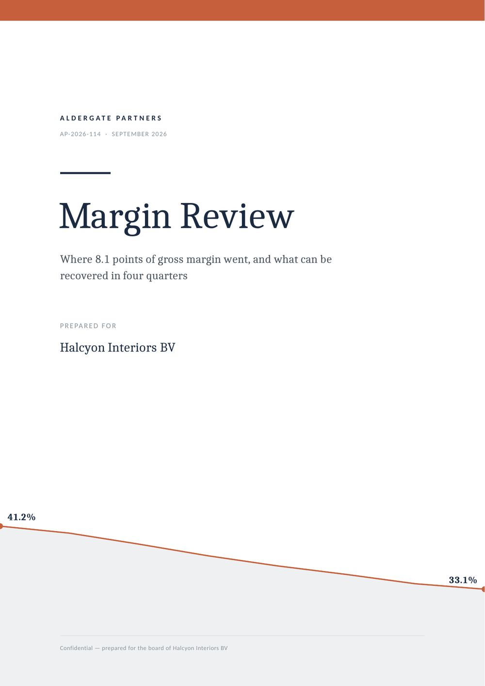
Flip versions with ← → to move through the pages, or click a thumbnail. The raw version is what the model actually returns: markdown headings left as hashes, tables as pipe characters, and five places where it suggests a chart instead of drawing one.
The finished report
Cover, contents with live page numbers, eleven sections and an appendix. Nothing below is a mockup — it is the actual PDF, rendered page by page.
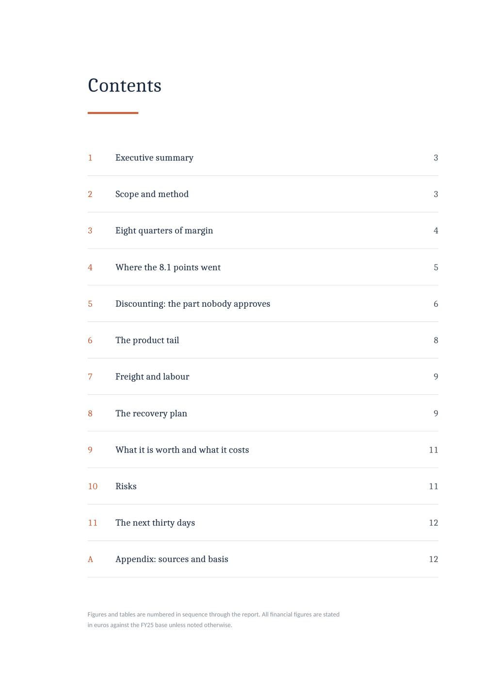
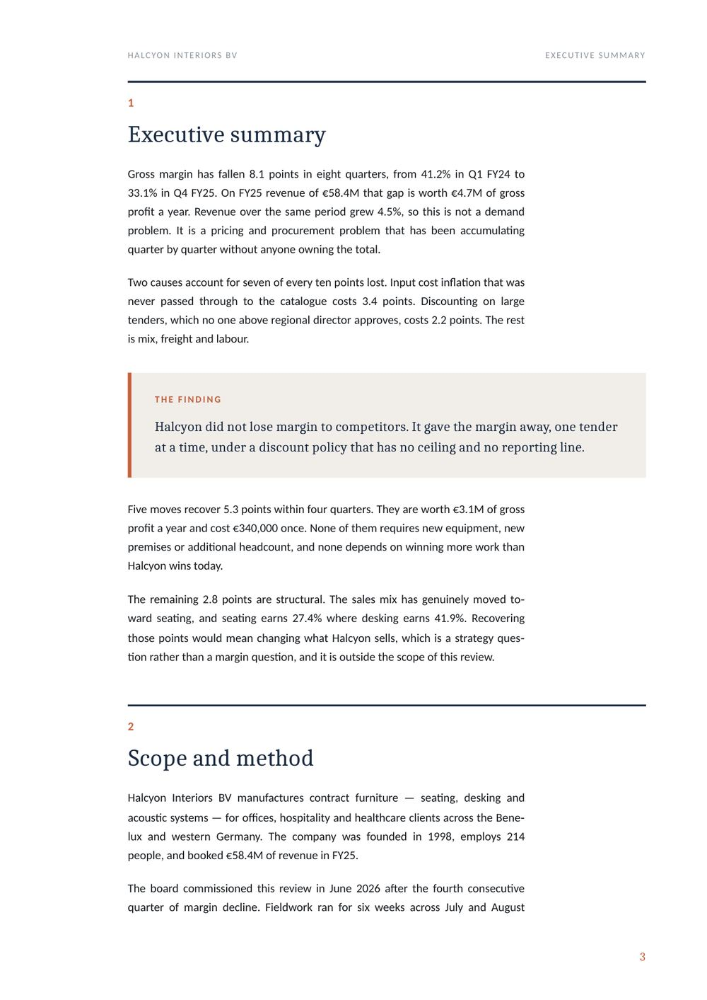
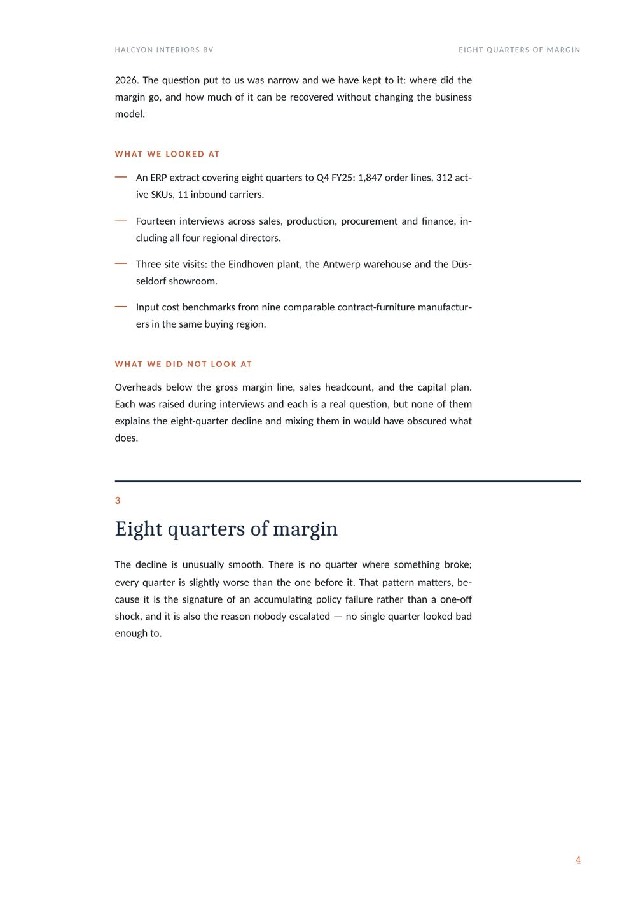
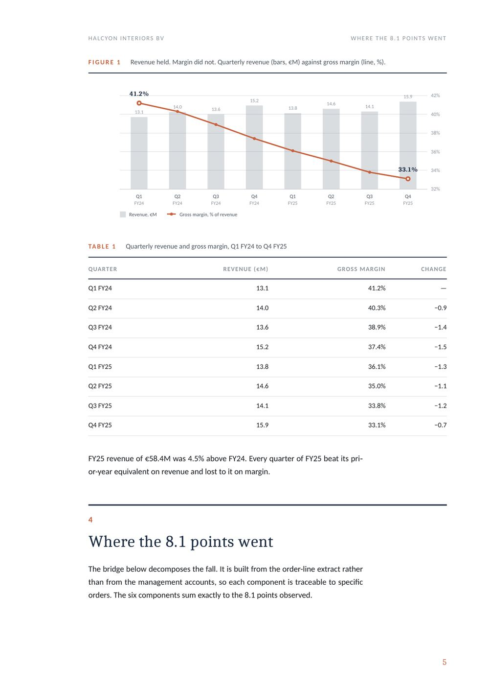
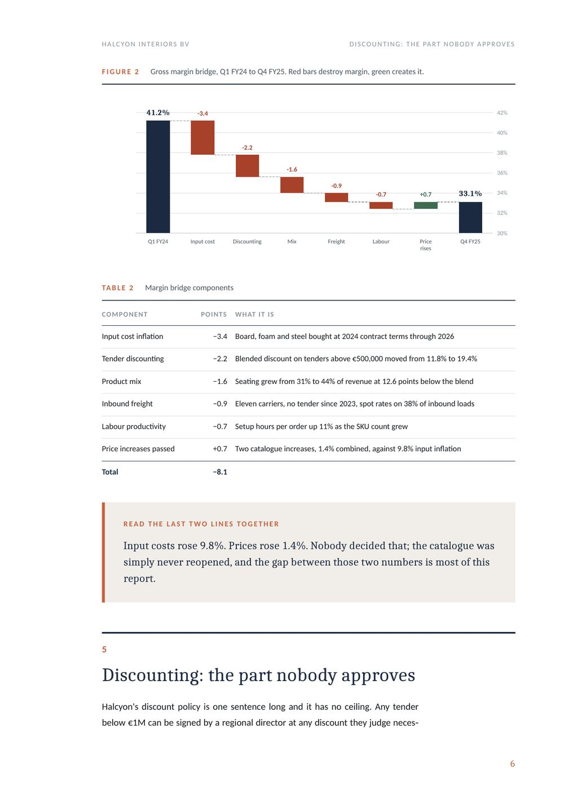
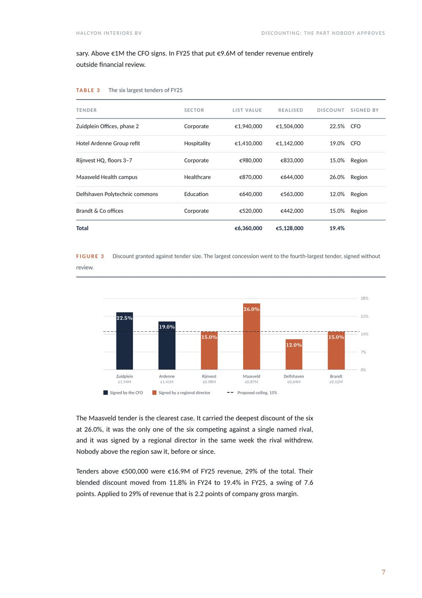
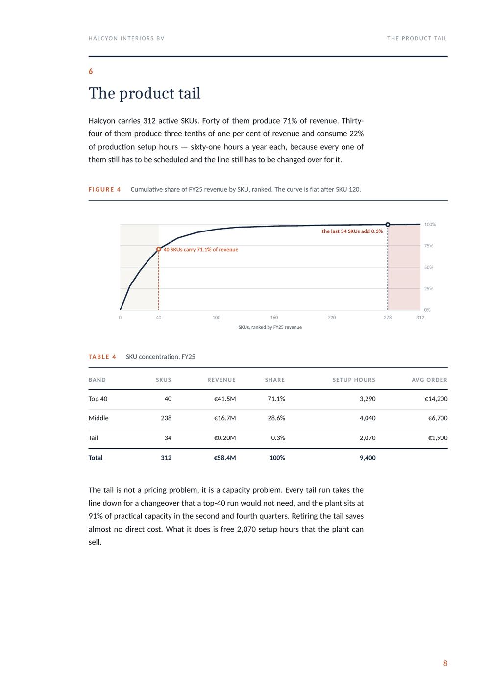
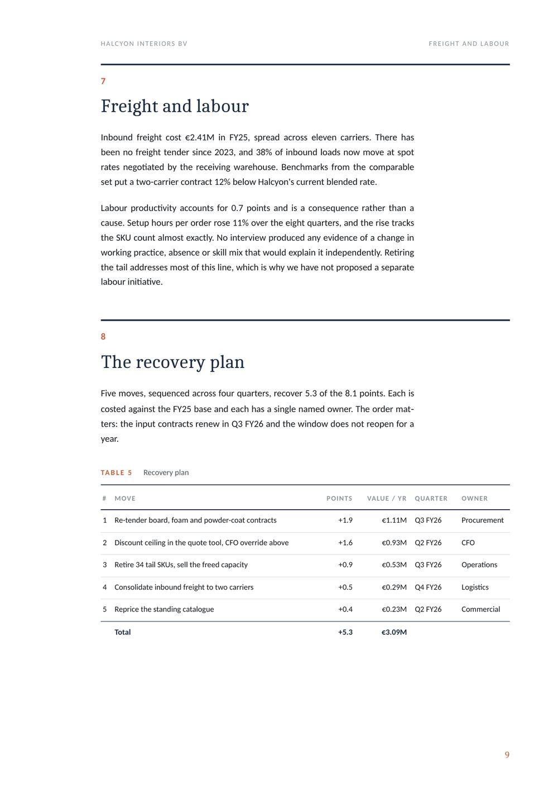
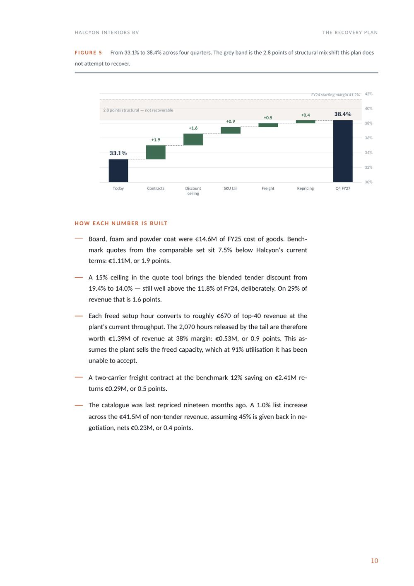
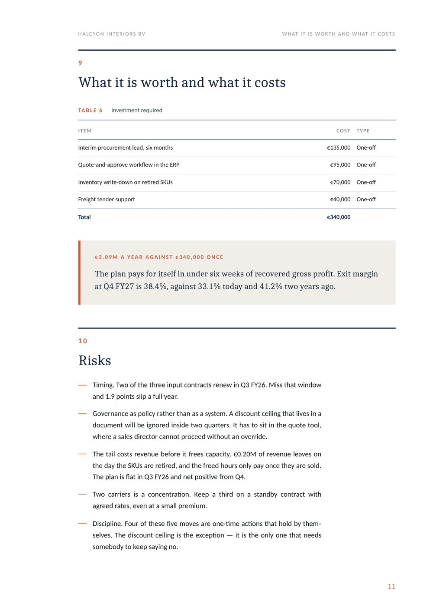
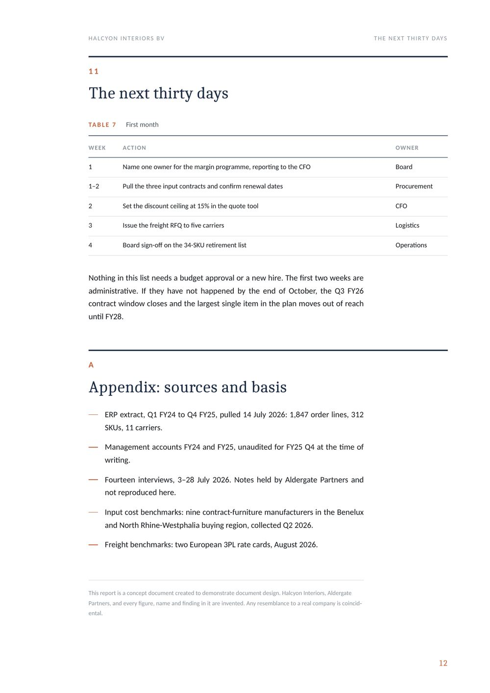
Six decisions
None of this is decoration. Each one is there because it changes what a reader can do with the page.
The model does produce the data. It produces it as pipe characters, which render as pipe characters in Word. Same six rows, same numbers, same order — one of them can be scanned in three seconds and one cannot.
**Margin bridge components** | Component | Points | What it is | |-----------|--------|------------| | Input cost inflation | −3.4 | Board, foam and steel bought at 2024 contract terms through 2026 | | Tender discounting | −2.2 | Blended discount on tenders above €500,000 moved from 11.8% to 19.4% | | Product mix | −1.6 | Seating grew from 31% to 44% of revenue at 12.6 points below the blend | | Inbound freight | −0.9 | Eleven carriers, no tender since 2023, spot rates on 38% of inbound loads | | Labour productivity | −0.7 | Setup hours per order up 11% as the SKU count grew | | Price increases passed | +0.7 | Two catalogue increases, 1.4% combined, against 9.8% input inflation | | Total | −8.1 | |
| Component | Points | What it is |
|---|---|---|
| Input cost inflation | −3.4 | Board, foam and steel bought at 2024 contract terms through 2026 |
| Tender discounting | −2.2 | Blended discount on tenders above €500,000 moved from 11.8% to 19.4% |
| Product mix | −1.6 | Seating grew from 31% to 44% of revenue at 12.6 points below the blend |
| Inbound freight | −0.9 | Eleven carriers, no tender since 2023, spot rates on 38% of inbound loads |
| Labour productivity | −0.7 | Setup hours per order up 11% as the SKU count grew |
| Price increases passed | +0.7 | Two catalogue increases, 1.4% combined, against 9.8% input inflation |
| Total | −8.1 |
Five times the report stops and recommends a chart. A recommendation is not a chart. The numbers were already in the text, so I drew them — every figure in the report is generated from the same data the paragraphs quote, which is also why they cannot drift apart.
[A chart visualising this data would be helpful here. I'd recommend a clustered column or line chart depending on your preference.]
Figure 2 Gross margin bridge, Q1 FY24 to Q4 FY25. Red bars destroy margin, green creates it.
Word's default puts about sixteen words on a line across the full page width. At the end of each line the eye has to find its way back to the start of the next one, and at that length it regularly lands on the wrong one. The report sets text in a 118 mm column — around eleven words — and lets tables and charts break out to the full width instead. The page is doing two jobs, so it has two widths.
The raw version opens with “Certainly! Here is a comprehensive margin review report” and ends with an offer to adjust the tone. In between there is no cover, no contents, no page numbers and no running head, so there is no way to send somebody to a specific finding. The designed version has a cover, a contents page whose page numbers are generated at render time rather than typed, numbered sections, numbered exhibits, and a running header that tells you which section you are in.
Two typefaces with one job each: a serif for the cover, the section titles and every headline number, a sans for everything that has to be read at length. Three colours — navy for structure, terracotta for the one thing on the page that matters, grey for everything that supports it. Because it is a system, the twelfth page needed no decisions at all.
Before I touched the design I ran the report's own arithmetic: the bridge components against the 8.1 points, the SKU bands against the revenue total, the five recovery moves against the €3.09M, the payback against the investment. The text, the tables and the charts then read one data file, so a figure cannot drift between a sentence and the chart beside it. A beautifully set document that does not add up is worse than an ugly one, because people believe it.
Approach
The same six steps whether it is a twelve-page report, a board memo or a white paper.
What is the one thing this document is trying to get the reader to do? Everything that survives has to serve that. In this report it was a single sentence: the margin was given away, not lost, and here is what it costs to take it back.
Totals, percentages, anything that appears twice. AI-written documents are confident and are wrong in small ways that a reader will find. I fix these before laying out a single page, and I tell you exactly what I changed.
Read on a laptop, printed for a board pack, attached to an email, or all three. A4 or US Letter, colour or mono, single or double sided. These decide the margins and the type sizes, so they get settled first, not last.
Type scale, colour, grid, spacing, table rules, caption style, how a figure is numbered. One page of decisions that every later page inherits. This is what keeps a long document consistent, and it is what makes revisions cheap.
Most of the value is here. Text that says “this fell from 41.2% to 33.1% over eight quarters” becomes a chart, and the paragraph beside it gets shorter. I draw charts from your numbers, not from a screenshot of them.
Widows and orphans, headings stranded at the foot of a page, contents entries against real page numbers, every figure reference checked, and a look at it at 100% on paper size. Then I send you the file and the source.
The document in any format, who reads it, and whether there is a brand to follow. Logo, fonts and colours if you have them; if you do not, I will propose a pairing and show you it applied before going further.
A report this size — twelve pages, five charts, seven tables — is three to four working days including one round of revisions. A short memo or a one-pager is usually next day.
A print-ready PDF and an editable Word or Google Docs version with real styles, so your team can keep writing in it. Charts as separate files if you want them in a deck later.
The point of all of this is not that the document looks better. It is that a reader who has eleven minutes now gets the finding, the evidence and the cost, instead of getting through the first two pages and deciding to come back to it later.